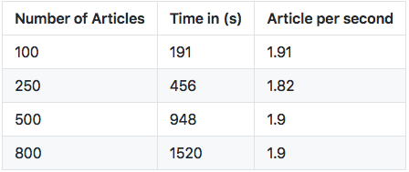

Pubmed-Wikibase
Automated creation and filling of a new wikibase instance with PubMed metadata and MeSH terms.
- Automated inserts into a fresh Raise-Wikibase instance
- Scripts for automated property and item creation given a queryterm
- Scripts tested in a Windows system within a Ubuntu 20.04 terminal with Python 3.9.2
- The Documentation can also be read on the hosted GitHub Page
Table of contents
- Overview
- Entities and Properties
- How to use
- Installation
- Customizing Wikibase
- Important Scripts
- Systems.py
- Wikibase Log-in
- Creating Properties
- Data Retrieval
- Creating MeSH Items
- Creating PubMed Items
- Useful Docker Commands
- Creating Backups
- Performance
- Sources
- Acknowledgements
- Further Research
Overview
A Repository that specializes itself in creating a fresh Wikibase instance filled with relevant PubMed metadata and MeSH Headings from the NLM Database.

Entities and Properties
The Knowledge graph of this Wikibase instance is based on two type of entities:
- PubMed Articles
- MeSH Term Entities
The two entities are connected to each other semantically via the shared "MeSH ID".
How to use
Installation
For the Installation the following steps are required after cloning/forking this repository:
For Windows: Install & Enable WSL2
Microsoft Docs : https://docs.microsoft.com/en-us/windows/wsl/install-win10
For Windows: Install Ubuntu Terminal
Ubuntu Docs : https://ubuntu.com/tutorials/ubuntu-on-windows#1-overview
Install Docker & Docker Desktop
Docker Docs : https://docs.docker.com/get-docker/
Creating Virtual Environment for Usage
On Linux and MacOS
$ python3 -m venv venv
$ source venv/bin/activate
On Windows
$ py -m venv venv
.\venv\Scripts\activate
Requirements.txt
pip3 install -r requirements.txt
Further Instructions
Raise Wikibase as further reference : https://github.com/UB-Mannheim/RaiseWikibase
git clone https://github.com/UB-Mannheim/RaiseWikibase
cd RaiseWikibase/
sudo apt install default-libmysqlclient-dev
pip3 install -e .
env.tmpl > rename to '.env' and insert usernames/password
docker-compose up -d
Easy Errors to avoid on setup
- Fill the Wikibase instance as soon as possible with first items/properties. An empty wikibase is prone to many errors, especially on restart.
- env.tmpl: Passwords must be at least 10 characters long or else the wikibase services will refuse to properly authenticate
- env.tmpl: [WB_DB_USER], [WB_DB_NAME], [WB_ADMIN_USER] must be (fully) capitalized in order to avoid db connection errors when inserting items
Customizing Wikibase
With Extensions, it is possible to customize the Wikibase Instance.
## Making Changes
- LocalSettings.php.template
## Extensions
- Download Extension in ./RaiseWikibase/extensions
- Add Volume to docker-compose.yml
- ./extensions/TemplateStyles:/var/www/html/extensions/TemplateStyles
- Add Volume to LocalSettings.php.template
-wfLoadExtension( 'TemplateStyles' );
${DOLLAR}wgTidyConfig = [
'driver' => 'RaggettInternalPHP',
'tidyConfigFile' => "${DOLLAR}IP/includes/tidy/tidy.conf",
];
Important Scripts
The following sections introduces the scripts responsible for automated ingestion of a fresh Wikibase instance.
Systems.py
Mainscript that executes all important scripts to sucessfully fill the Wikibase instance:
systems.py
#Import Main Scripts
import create_properties
import data_retrieval
import create_mesh_items
import create_items_wd
retmaximum = 10
queryterm ='infectious diseases'
# Execute scripts
create_properties.first_property_setup()
metadata = data_retrieval.main(retmaximum, queryterm)
create_mesh_items.main('meshtermlist.csv')
create_items_wd.main(metadata)
Wikibase Log-in
Creates a Bot, saves the credentials in config.json and uses those credentials to log into the Wikibase Instance
def wikibase_login():
## Create Bot and save credentials in .config.json
create_bot()
config = Settings()
## Connect to Wikibase Instance and login with credentials
wdi_config['MEDIAWIKI_API_URL'] = config.mediawiki_api_url
wdi_config['SPARQL_ENDPOINT_URL'] = config.sparql_endpoint_url
wdi_config['WIKIBASE_URL'] = config.wikibase_url
#The config dictionary can be used in WikibaseIntegrator for creating a login instance:
login_instance = wdi_login.WDLogin(user=config.username, pwd=config.password)
Creating Properties
Automatically allows the user to create user-defined properties in the Wikibase instance. Allows you to both extract properties directly from WikiData and create custom properties:
create_properties.py
# Extract Properties from WD(WikiData) and insert them into the Wikibase instance
p1 = property_wd('P932') #PBMCID
p2 = property_wd('P698') #pubmed id
batch('wikibase-property', [p1, p2])
#Create custom MeSH relevant properties
p27 = create_property('MeSH Heading', ['Heading'], 'Label of the MeSH descriptor ID', 'string')
p28 = create_property('ScopeNote', ['Note'], 'Note describing further the Label of a MeSH Heading', 'string')
p29 = create_property('MeshBrowserLink', ['Mesh URL', 'MeSH Browser'], 'MeSH Browser URL of a specific Mesh Heading', 'url')
p30 = create_property('MeSH Treecode', ['Tree', 'MeSH Tree'], 'MeSH Tree Code of a specific Mesh Heading', 'string')
batch('wikibase-property', [p27, p28, p29, p30])
Data Retrieval
Automatically creates a csv-file with all used MeSHTerms,their description and tree number and a list of all articles found to the queryterm:
data_retrieval.py
urllist = df['MeSHBrowserLink'].tolist()
for i in urllist:
n = i
start = time.time()
driver = webdriver.Chrome(chrome_options=options)
driver.get(i)
time.sleep(3)
element = driver.find_elements_by_xpath('//a[contains(@id,"treeNumber_")]')
elementlist = []
for i in element:
elementlist.append(i.text)
TNlist.append(elementlist)
end = time.time()
timelist.append(end-start)
df['TreeNumbers'] = TNlist
df.to_csv('meshtermlist.csv')
return dicts
Creating MeSH Items
Automatically creates MeSH items with retrieved metadata:
create_mesh_items.py
def upload_data(login_instance, config, meshtermlist):
# Load excel table to load into Wikibase
mydata = pd.read_csv(meshtermlist)
for index, row in mydata.iterrows():
## Prepare the statements to be added
item_statements = [] # all statements for one item
item_statements.append(wdi_core.WDString(mydata.loc[index].at['MeSH Unique ID'], prop_nr="P26")) #MeSH Unique ID
item_statements.append(wdi_core.WDString(mydata.loc[index].at['MeSH Heading'], prop_nr="P27")) #MeSH Heading
item_statements.append(wdi_core.WDUrl(mydata.loc[index].at['MeSHBrowserLink'], prop_nr="P29")) #MeSH URL
## instantiate the Wikibase page, add statements, labels and descriptions
wbPage = wdi_core.WDItemEngine(data=item_statements, mediawiki_api_url=config.wikibase_url + "/w/api.php")
wbPage.set_label(mydata.loc[index].at['MeSH Heading'], lang="en")
wbPage.set_description("MeSH Entity extracted from NLM", lang="en")
## sanity check (debug)
pprint.pprint(wbPage.get_wd_json_representation())
## write data to wikibase
wbPage.write(login_instance)
Creating PubMed Items
Automatically creates PubMed article items with retrieved metadata:
create_items_wd.py
def upload_data(login_instance, config, metadata):
author_list = []
mesh_list = []
df = pd.read_csv('meshtermlist.csv')
for index in metadata:
# Get relevant Values from retrieved Metadata
PMID = safeget(index, 'PubmedArticleSet','PubmedArticle', 'MedlineCitation', 'PMID', '#text')
title = safeget(index, 'PubmedArticleSet','PubmedArticle', 'MedlineCitation', 'Article', 'ArticleTitle')
pdate = safeget(index, 'PubmedArticleSet','PubmedArticle', 'MedlineCitation', 'Article', 'ArticleDate', 'Day') + '.' + \
safeget(index, 'PubmedArticleSet','PubmedArticle', 'MedlineCitation', 'Article', 'ArticleDate', 'Month') + '.' + \
safeget(index, 'PubmedArticleSet','PubmedArticle', 'MedlineCitation', 'Article', 'ArticleDate', 'Year')
author_list = safeget(index, 'PubmedArticleSet','PubmedArticle', 'MedlineCitation', 'Article', 'AuthorList', 'Author')
language = safeget(index, 'PubmedArticleSet','PubmedArticle', 'MedlineCitation', 'Article', 'Language')
mesh_list = safeget(index, 'PubmedArticleSet','PubmedArticle', 'MedlineCitation', 'MeshHeadingList', 'DescriptorName')
## Prepare the statements to be added
item_statements = [] # all statements for one item
item_statements.append(wdi_core.WDString(PMID, prop_nr="P5")) #PMID
item_statements.append(wdi_core.WDString(title, prop_nr="P11")) #title
item_statements.append(wdi_core.WDString(pdate, prop_nr="P14")) #publication date
for a in author_list:
item_statements.append(wdi_core.WDString(str(safeget(a, 'LastName')+ ',' + safeget(a, 'ForeName')), prop_nr="P13")) #author name string
item_statements.append(wdi_core.WDString(language, prop_nr="P18")) #language
for m in mesh_list:
if ( df[df['MeSH Unique ID'] == safeget(m, '@UI')].index[0]):
r= df[df['MeSH Unique ID'] == safeget(m, '@UI')].index[0] + 1
entity_link = 'http://localhost:8181/wiki/Item:'+ 'Q' + str(r)
item_statements.append(wdi_core.WDItem(entity_link, prop_nr="P39"))
## instantiate the Wikibase page, add statements, labels and descriptions
wbPage = wdi_core.WDItemEngine(data=item_statements, mediawiki_api_url=config.wikibase_url + "/w/api.php")
wbPage.set_label(title, lang="en")
wbPage.set_description("Article retrieved from PubMed", lang="en")
## write data to wikibase
wbPage.write(login_instance)
Useful Docker Commands
Following Docker Commands can be of use when customizing and editing the Wikibase instance.
Stop Wikibase Docker
docker-compose down
Remove uploaded Data & run fresh Wikibase Instance
sudo rm -rf mediawiki-* query-service-data/ quickstatements-data/
docker-compose up -d
Reload a single service (example: wikibase) to adopt new changes in settings
docker-compose up --no-deps -d wikibase
Creating Backups
Volume backups and snapshots can be made through these commands.
docker run -v wikibase-registry_mediawiki-mysql-data:/volume -v /root/volumeBackups:/backup --rm loomchild/volume-backup backup mediawiki-mysql-data_20190129
docker run -v wikibase-registry_mediawiki-images-data:/volume -v /root/volumeBackups:/backup --rm loomchild/volume-backup backup mediawiki-images-data_20190129
docker run -v wikibase-registry_query-service-data:/volume -v /root/volumeBackups:/backup --rm loomchild/volume-backup backup query-service-data_20190129
Performance
Inspecting the Performance, we see a linear growth of time taken per Article Volume, averaging around 1.88 Article Insertions per second.
Sources
Acknowledgements
Many thanks to UB-Mannheim for providing the Raise Wikibase Repository, Adam Shorland for providing many resources when it comes to building and customizing Wikibase instances, and Konrad Förstner and Eva Seidlmayer for the continued guidance throughout the course.
Further Research
Following Issues and possible points of further research interest have been identified
- Dynamically Adapt Property Creation with CSV
- Extract MeSH Entities directly from Wikidata
- Enter Wikibase into Wikibase Registry
- Authenticate Author Entities with external databases such as Scholia
- Calculate IR/NLP metrics on Abstracts
- Implement MeSH Tree Hierarchy as Knowledge Graph Structure
- Complement Knowledge Graph Structure with semantic connection between articles, author entities and affiliation entities
- Measure Accuracy on MeSH Term Enrichening Process in data_retrieval.py